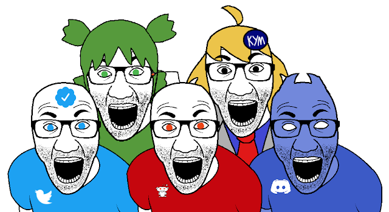
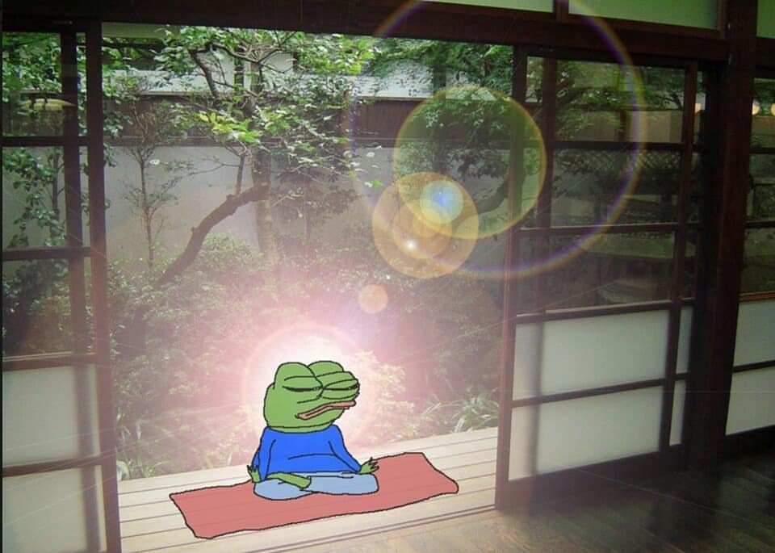

How to Become Productive and Learn to Continuously Improve
This blog is aimed at individuals who find it challenging to be productive. Before we jump into the content, it's crucial to understand that you're not alone in facing this struggle – many others do as well. When I encountered this issue, I had to learn through trial and error, which led to spending significant amounts of time on unproductive activities. I couldn't find a single resource that provided everything I needed. That's why I'm creating one now.
step 1: Analyze Your Situation
This step is absolutely crucial for making effective progress toward your goals. It involves seeking feedback from others perspectives. Ask them what they think your strengths or weaknesses are. Make sure to distance yourself from individuals who are uncooperative or discouraging as they will only just waste time.
step 2: Apply Swot
SWOT stands for Strengths, Weaknesses, Opportunities, and Threats. It is a strategic planning tool used to identify and evaluate these four aspects of a project or situation. By analyzing these factors, you can gain insights into their internal strengths and weaknesses, as well as external opportunities and threats. This process helps in making informed decisions and developing effective strategies.
step 3: Apply Kanban (カンバン)
Imagine a visual board where you can place your assignments, projects, and tasks into different columns representing different stages. You can easily see what needs to be done, what's in progress, and what's completed. As you work on tasks, you move them across the board, giving you a clear picture of your progress. This method helps you stay organized, erioritize effectively, and adapt to changes in your workload. It's like having a roadmap for your studies that keeps you on track and makes managing your academic tasks much smoother. https://en.wikipedia.org/wiki/Kanban
step 4: use a Habit Tracker
Self-reflection involves introspectively examining your thoughts, feelings, actions, and experiences. It's a process of looking inwardly to gain deeper understanding and insight into yourself, your motivations, and your personal growth. It allows you to evaluate your strengths, weaknesses, and areas for improvement, which is crucial for enhancing self-awareness and making positive changes in various aspects of your life. Habit trackers facilitate self-reflection by helping you track and assess your daily habits and goals, contributing to your overall personal development journey. One example is Habitica a free and open source habit tracker which I really liked using. https://habitica.fandom.com/wiki/What_is_Habitica%3F

step 5: learn the podomoro technique
The Pomodoro Technique, named after the Italian word for "tomato," was developed by Francesco Cirillo in the late 1980s.
Inspired by a kitchen timer shaped like a tomato, Cirillo divided his work into short, focused intervals, each resembling a "pomodoro"
(tomato in Italian). Each pomodoro lasts for around 25 minutes, followed by a short 5-minute break.
After completing four pomodoros, take a longer break of 15-30 minutes.
By breaking work into manageable intervals and incorporating regular breaks, you'll find yourself achieving more in less time.
That way you will save time for other kinds of activities.
https://en.wikipedia.org/wiki/Pomodoro_Technique

step 6: wake up early, finish work early. fix your sleep schedule!
bet the first thing you do before and after sleep is waste 30 minutes on your phone. instead of doing that, put the phone to a spot that demands you to stand up and silence the alarm. That will prevent you from longing in bed and motivate you to go straight to your morning tasks. To optimize your daily schedule, aim to conclude your activities by 10 PM. Then allocate no more than 7/8 hours to sleeping. This practice ensures that you allocate sufficient time to your morning routine, setting the stage for a productive day ahead.
step 7: Minimize social media activity
Keep social media usage strictly need-based, such as reading important announcements or connecting with like-minded individuals on niche forums. Say no to pointless chitchat, attention-seeking behaviors, and toxic environments that drain your mental energy. Put yourself to offline status, and gradually become less and less active.

step 8: replace morning caffeine with natural alternatives
Caffeine has its benefits, but for most people, it does nothing but disrupt sleep patterns and
cause headaches if the daily intake is not consumed.
Instead of drinking a Sugar-Laden soy latte, what about you try a cold bath or jumping rope ?
Both body and mind need to be wakeful. At the first 5 days you may experience headaches and a lack of energy because
you've trained your brain to operate only after consuming caffeine and sugar. After 1-2 weeks depending
how much addicted you were, your body may become accustomed to caffeine and it may no longer have an effect on you.
That way not only you get back on your feet but also save money from sugar drinks!

step 9: meditation
Taking a break for meditation in the middle of the day is really important. It helps your mind and body relax and find peace, it's a great way to handle feelings of anxiety or being overwhelmed. Just 30 minutes or an hour of meditation will recharge your batteries and give you a turbo boost. Unlike power naps that have a significant overhead (time required to sleep + time sleeping + time required to get back on feet). https://en.wikipedia.org/wiki/Meditation

Conclusion
The above steps are just the start, the key is to make be consistent. As you adapt these principles to your circumstances, you will see exponential growth and slowly bring more tricks to the table. I hope you found this blog useful.